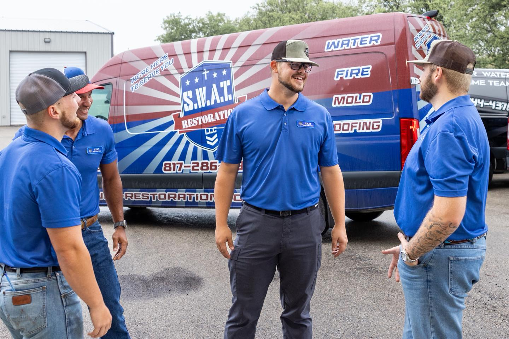

When disaster strikes your home or business, you need more than just a contractor—you need a partner you can trust. At SWAT Restoration, we are proud to be North Texas’s first responders for disasters, helping families and businesses recover from water, fire, storm, and mold damage with speed, excellence, and care.
SWAT Restoration was born out of SWAT Plumbing, a trusted, family-owned company founded by Dillon and Danielle Patterson. After years in the plumbing industry, the Pattersons saw firsthand how devastating water and storm damage could be for homeowners. They launched SWAT Restoration to extend the same values—honesty, integrity, and personal service—into the world of restoration.
As a local, family-owned company, we care about more than just fixing what’s broken. We care about restoring your peace of mind. When you call us, you’re not talking to a corporate call center—you’re working with neighbors who understand what you’re going through.
At SWAT Restoration, we offer a full range of restoration solutions, including:
Disasters are unpredictable—but choosing the right restoration company doesn’t have to be. With SWAT Restoration, you’ll have a trusted, family-owned partner who shows up fast, works with excellence, and puts your family’s needs first.
If your home or business has suffered water, fire, storm, or mold damage, call SWAT Restoration today. Let us help you rebuild, restore, and return to normal.